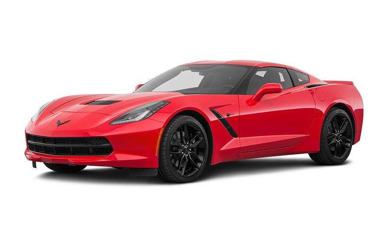

A sedan has four doors and a traditional trunk. Like vehicles in many categories, they're available in a range of sizes from small (subcompact vehicles like Nissan Versa and Kia Rio) to compacts (Honda Civic, Toyota Corolla) to mid-size (Honda Accord, Nissan Altima),
and full-size (Toyota Avalon, Dodge Charger). Luxury brands like Mercedes-Benz and Lexus have sedans in similar sizes as well.
COUPE
A sedan has four doors and a traditional trunk. Like vehicles in many categories, they're available in a range of sizes from small (subcompact vehicles like Nissan Versa and Kia Rio) to compacts (Honda Civic, Toyota Corolla) to mid-size (Honda Accord, Nissan Altima),
and full-size (Toyota Avalon, Dodge Charger). Luxury brands like Mercedes-Benz and Lexus have sedans in similar sizes as well.
SPORT CAR

These are the sportiest, hottest, coolest-looking coupes and convertibles—low to the ground, sleek, and often expensive. They generally are two-seaters, but sometimes have small rear seats as well. Cars like the Porsche 911 and Mazda Miata are
typical sports cars, but you can stretch the definition to include muscle cars like the Ford Mustang and Dodge Challenger. Then there are the high-end exotic dream cars with sky-high price tags for the one percent, cars like the Ferrari 488 GTB
and Aston Martin Vantage, which stop traffic with their spaceship looks.
.
.
STATION WAGON
Wagons are similar to sedans but have an extended
roofline and a hatch door at the rear instead of
a trunk. Some, like the Subaru Outback or
Audi A4 Allroad, have elevated ground
clearance and some rugged body
cladding to make them more like a sport-utility vehicle (SUV), but they are nonetheless
closely related to sedans. Wagons have fallen from favor during the past few decades and there
are relatively few available for sale in the United States..